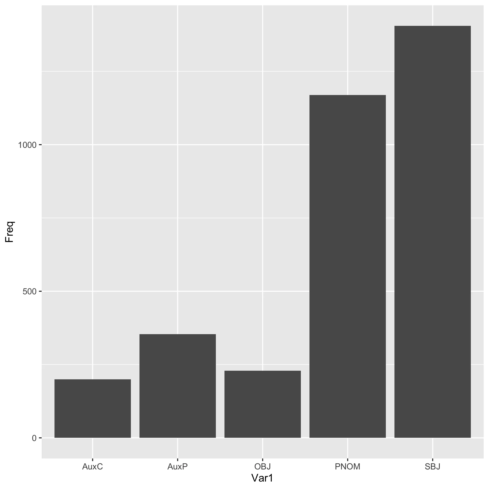
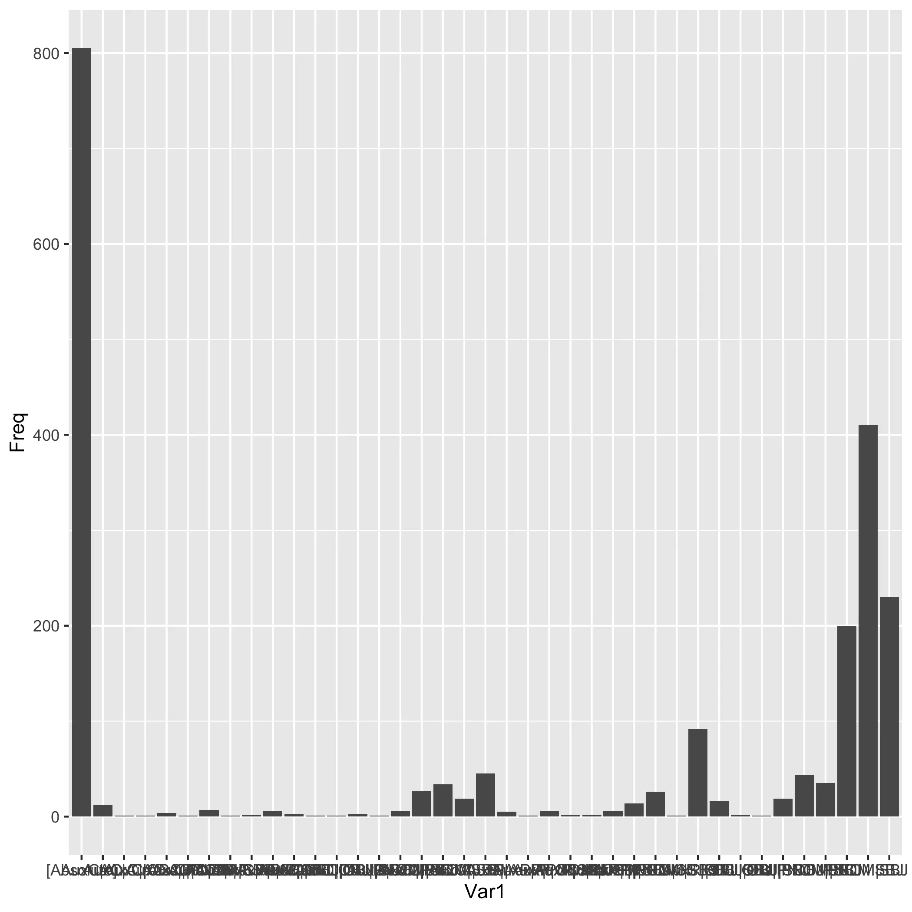

5 sum1
This page conveys lexicographical information about the lemma sum1.
5.1 Dictionary data
Sum, es, fui.
ser, ou estar, ou ter, ou estimar ou haver mister.
Sum, es, fui,
ser, ou estar. Por ser de alguem, convir, ou pertencer, gen. Por ser estimado, ou valer, gen. vel ablat. pretij. Por ter, ou ser tido, dativ. personae habentis; ut: est mihi liber unus, sunt tibi duo: additur, & alius dativ. pro cujus diversitate diversa significat, scilicet, cum dativ. Odio, significat, causar odio, ou ser de odio a alguem, ut: Vitium bonis odio est, os bons aborrecem os vicios. hoc tibi crimen non erit, naõ vos será isto de crime, ou naõ se vos attribuirá a crime; & sic de aliis: saepè solus dativ. rei ponitur; ut: Id miraculo fuit, foi tido por milagre, ou foi cousa milagrosa. Indicio esse, ser de indicio, ou mostra, etc.§ Dicimus etiam: Est mihi malè, estou mal de saude. Est mihi meliús, estou melhor: Est mihi minùs cum illo, tenho menos famillaridade com elle. Est, pro Licet sine casu, ut: Cernere erat, era licito, ou podia se ver. Es, est, & c. por comer, accus. Vide Futurus. 218. 30. 220. 30. 324. 2.
sum, es, est,
Ser, estar, aver, ter, estimar.
Sum, es, fui, ēsse,
Cic. Ser, estar, ser tido, ser estimado, valer, pertencer, causar, etc.
5.2 Corpus data
5.2.1 Frequency
sum1 is the 1 th most frequent verbal lemma in the corpus
SBJ is the most frequent Argument Type for sum1

[Absolute] , PNOM|SBJ and SBJ are the three most frequent Dependency Patterns for sum1
